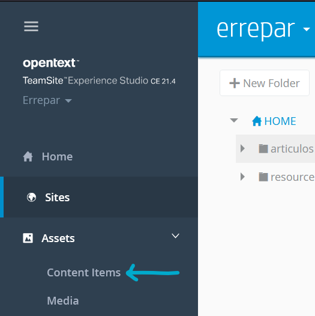
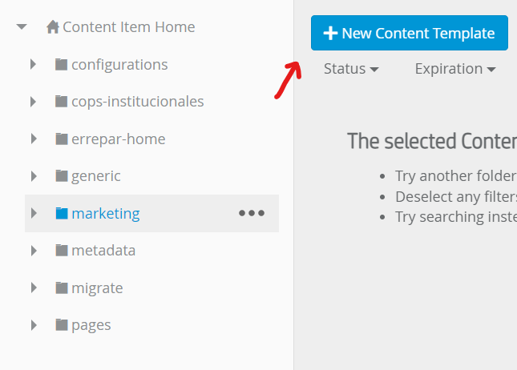
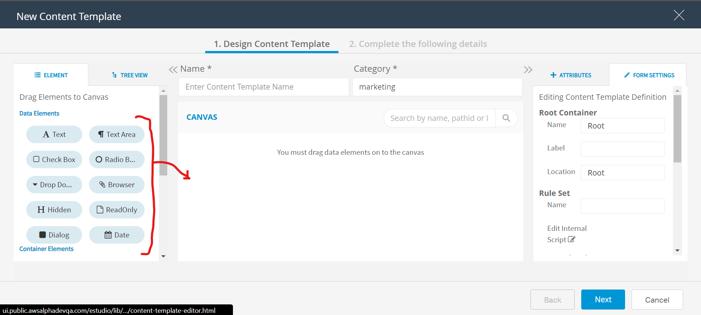
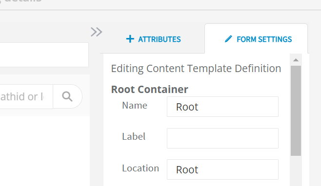
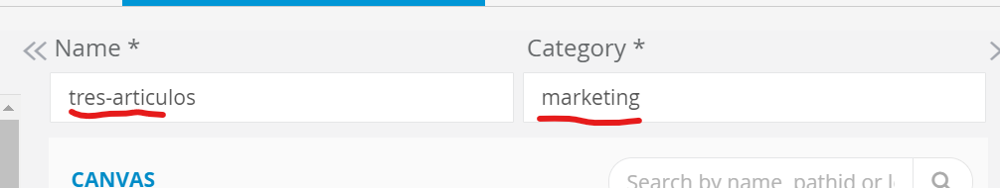
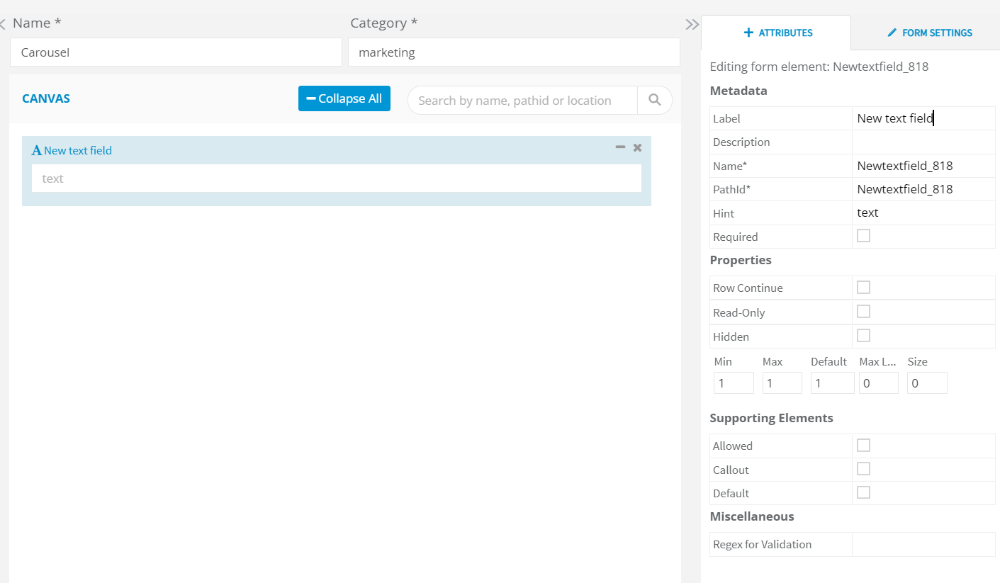
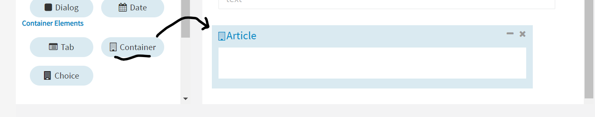

DCR en Experience Studio
Crear un DCR o "Content Template"
-
Para crear un DCR dirigirse a Experience Studio, ya sea para DEVQA o PROD
- En el menú de navegación lateral seleccionar "Assets/Content Items" 
-
Seleccionar la ubicación del nuevo DCR (Este será el campo "Category" mencionado en DCRs en CCPro)
- errepar-home: Para componentes dentro de la Home.
- generic: Para componentes comunes como Header, Footer, Banners, etc...
- marketing: En "marketing" hay DCRs para componentes más específicos de cada página.
- Tener en cuenta que no hay una taxonomía definida para la ubicación de los DCRs.
Después de seleccionar la ubicación, +New Content Template
 - Aparecerá una ventana de edición del DCR como se ve en la imagen. Dónde se pueden arrastrar campos del DCR al template. 
- Definir el name y location del formulario. Dejar los valores por defecto (Recomendado). El valor de name y location serán usados para acceder al DCR desde un template.xsl en CCPRO 
- Definir el nombre del DCR y dejar el valor de Category por defecto (Recomendado) 
- Arrastrar un elemento desde la lista de elmentos a la izquierda hasta el "Canvas" en el centro. Definir el Label y Descripción. Para "Name" y "PathId" usar el mismo valor en ambos. Tildar "Required" en caso de ser un campo obligatorio. Definir un "Max Length" para el número máximo de caracteres. Y tildar "Default" en caso de querer utilizar un valor por defecto en el campo. Incluso se puede agregar una expresión regular para validar el input del usuario. 
-
En caso de que el/la autor/a necesite crear diversos elementos del
mismo tipo como pueden ser cards:
Utilizar un "container" que sirve para contener diversas instancias de un input group
Definir nombre, descripción, etc del container.
Insertar dentro del container cada input que vaya a necesitar el/la autor/a para crear cada artículo.
Luego el/la autor/a va a poder crear cuantas instancias necesite de este container dentro de los límites indicados por los atributos del componente
-
Una vez finalizado el DCR ir a "Next" y configurar todos los usuarios o grupos que podrán acceder al DCR
- Guardar cambios
- Finalmente Implementar el DCR en un Componente e Implementar el DCR en un Template .xsl